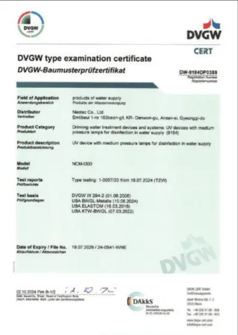
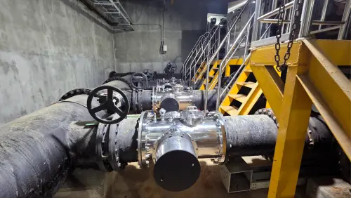
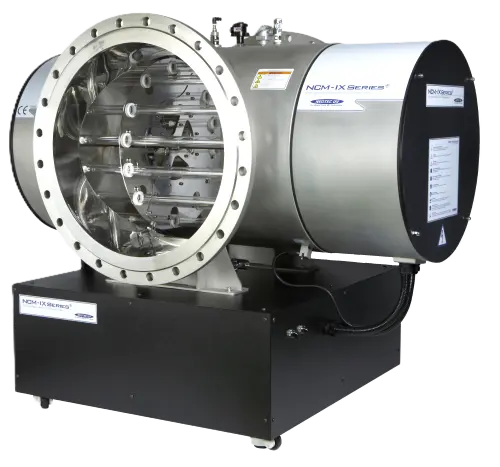

| NCM-I 시리즈 주요 사양 |
|---|
| 모델 | NCM-I300 | NCM-I450 | NCM-I600 | NCM-I750 | NCM-I800-8L | NCM-I800-12L |
| 총 램프 출력(kW) | 12 | 24 | 36 | 48 | 64 / 80 | 96 / 120 |
| UV 투과율 범위 | 70 ~ 98% |
| 최대 운전 온도 | 40℃ |
| 최대 수온 | 30℃ |
| 세척 시스템 | 운전 중 기계적 세척 / 운전 중 기계·화학 병행 세척 (옵션) |
| 성능 검증 및 인증 | DVGW, UVDGM, NSF61, CE |
| 반응기 재질 | SUS 316L |
| 램프 모니터링 | DVGW W294 준수 UV 센서 |
| Control Panel General Features |
|---|
| 재질 | 도장 처리 탄소강, 스테인리스강 |
| 설치 이격 거리 | 최대 100m |
| 입력 전원 | 220V Φ3 (I300, I450) / 380V Φ3 |
| CE 인증 | ✓ |

| NCM-US 시리즈 주요 사양 |
|---|
| 모델 | NCM-US152 | NCM-US150 | NCM-US200 | NCM-US320 |
| 총 램프 출력(kW) | 1.5 | 2.5 / 4 | 2.5. / 4 / 6 | 6 / 12 |
| UV 투과율 범위 | 70 ~ 98% |
| 최대 운전 온도 | 40℃ |
| 최대 수온 | 30℃ |
| 세척 시스템 | 운전 중 기계적 세척 / 운전 중 기계·화학 병행 세척 (옵션) |
| 반응기 재질 | SUS 316L |
| 램프 모니터링 | DVGW W294 준수 UV 센서 |
| NSF 60 | ✓ |
| Control Panel General Features |
|---|
| 재질 | 도장 처리 탄소강, 스테인리스강 |
| Power Input | 380V Φ3 |
| CE Certification | ✓ |


개인정보 처리방침: Neotec UV는 기업 고객의 상담 및 전문 서비스 문의 처리를 위해 필요한 최소한의 개인정보만 수집합니다.
수집하는 개인정보 항목: 문의 유형, 이름, 휴대전화번호, 이메일 주소 및 문의 내용
개인정보 수집 및 이용 목적: 고객 문의 검토 및 답변, 엔지니어링 상담 지원, 지속적인 고객 커뮤니케이션을 위한 상담 이력 관리
개인정보 보유 및 이용 기간: 제출된 모든 개인정보는 접수일로부터 2년간 안전하게 보관되며, 보유 기간이 경과하면 영구적으로 파기됩니다.
Cookie Policy: Neotec UV는 쿠키 데이터를 수집, 저장 또는 추적하지 않습니다. 당사 웹사이트는 정적인 정보 제공을 목적으로 설계되었으며, 사용자 추적이나 세션 정보를 저장하지 않는 독립적인 브라우징 환경을 제공합니다.